疏星的一个１２变化
首页
五子棋交流
#1 疏星的一个１２变化 作者：江南新绿 发表时间：2008-8-27 16:03:56
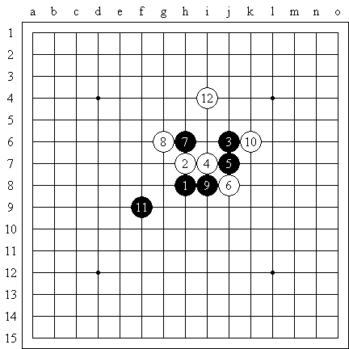
显然这个１２是对下图的改进
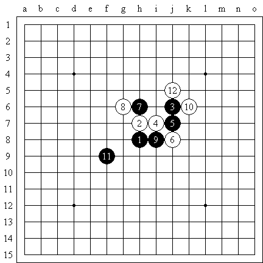
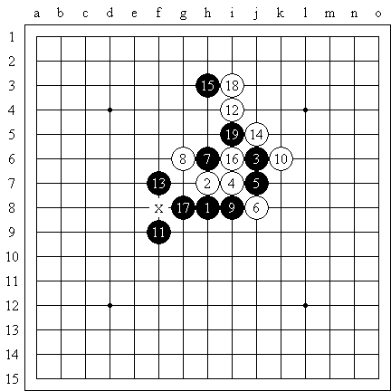
这里不能直接挡，否则被白棋造成一个三三禁手
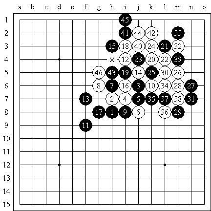
由于这套ｖｃｔ十分的复杂，以至于黑石都未必能一下子算的出来，所以也具有实战价值。在联众的比赛中曾经使用过，的确效果良好。
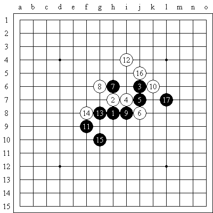
上图充分说明了为什么这个１２是改进版了。因为白棋如果活三的话，黑棋一定是应在下面。如此黑必胜
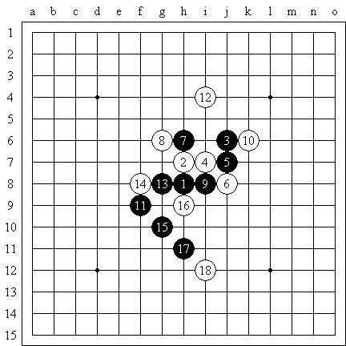
如上图，白棋下防好吗？
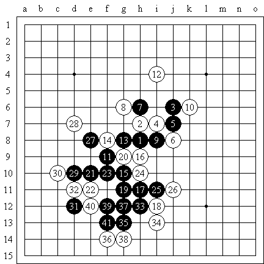
白棋随手就挂了。
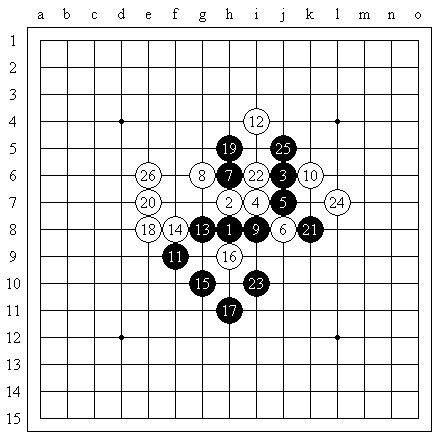
所以白棋１８只有上防，黑棋１９如果想从上面绕回来，那么计划是失败的，因为白棋有一路反。此图２０强手
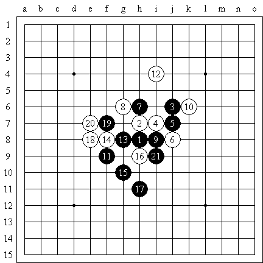
黑棋19防守住白棋可能出棋的地方。白棋看样子只有老实了。如果还是想对杀，黑棋２１严厉。
如果白棋２０老实下面去防守，那么白棋１２一个孤子的作用就很小了。所以总的看来这个１２黑棋好走。
参考棋谱：瑶瑶的红宝书。
［ 忧郁的双眼 于 2009-5-23 18:00:12 时花20金币送鲜花一朵］
#2 Re:疏星的一个１２变化 作者：潇洒 发表时间：2008-8-27 16:35:21
17反向活三也可以 ［ 失落刀 于 2009-5-23 19:52:31 时花20金币送鲜花一朵］
#3 Re:疏星的一个１２变化 作者：longfx 发表时间：2008-8-27 18:48:02
突然想起11下在15(最后一图),以前好象拆过,不过白也有唯一应对
PS,红宝书啥样的?
#4 Re:疏星的一个１２变化 作者：nara 发表时间：2008-8-27 20:45:27
参考棋谱：瑶瑶的红宝书。
什么东东啊?能发一份看看吗?
#5 Re:疏星的一个１２变化 作者：越狱行辕 发表时间：2008-9-18 18:49:14
把红宝书发出来吧
#6 Re:疏星的一个１２变化 作者：vmbdi 发表时间：2009-5-22 22:52:57
黑13下在e8如何?
#7 Re:疏星的一个１２变化 作者：yoda 发表时间：2009-5-23 7:54:52
刚看了看，感觉这个16黑能胜，拆了拆的确黑胜。
=======上图对应的爱五子棋谱代码如下，以便你拆解：========
h8h9j10i9j9j8h10g10i8k10f7i12g8f8g6h7
======================================================
#8 Re:疏星的一个１２变化 作者：yoda 发表时间：2009-5-23 9:27:51
的确简单胜，呵呵。顺手地毯了下，白12必败。
#9 Re:疏星的一个１２变化 作者：潇洒 发表时间：2009-5-23 10:49:12
李老师 是不是其他14也败了？？
#10 Re:疏星的一个１２变化 作者：苯酚 发表时间：2009-5-23 12:43:58
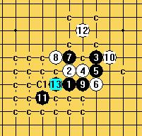
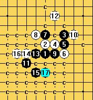
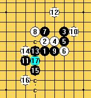［ 潇洒 于 2009-5-23 12:59:08 时奖励此帖[金币加 20 威望加1］
#11 Re:疏星的一个１２变化 作者：冷面孤煞 发表时间：2009-5-23 13:11:07

=======上图对应的爱五子棋谱代码如下，以便你拆解：========
h8h9j10i9j9j8h10g10i8k10f7i12g8f8g6h7e8h5d6
======================================================
#12 Re:Re:疏星的一个１２变化 作者：方圆之外 发表时间：2009-5-23 13:18:02
引用：
原文由 冷面孤煞 发表于 2009-5-23 13:11:07 :
=======上图对应的爱五子棋谱代码如下，以便你拆解：========
h8h9j10i9j9j8h10g10i8k10f7i12g8f8g6h7e8h5d6
======================================================
=======上图对应的爱五子棋谱代码如下，以便你拆解：========
h8h9j10i9j9j8h10g10i8k10f7i12g8f8g6h7e8h5d6j11
======================================================你的是白必胜。谢谢。。
#13 Re:疏星的一个１２变化 作者：没事摆石子玩 发表时间：2009-5-23 14:53:05
 幽默！！！！！！！！！！！！！
幽默！！！！！！！！！！！！！
#14 Re:疏星的一个１２变化 作者：yoda 发表时间：2009-5-23 15:39:29
13楼第二图的17是白胜。
#15 Re:疏星的一个１２变化 作者：陨落之城 发表时间：2009-5-23 15:57:23
楼上的大师，能否指点一下那个17白如何胜？
#16 Re:疏星的一个１２变化 作者：yoda 发表时间：2009-5-23 16:13:05
大师不敢当，白简单胜。
=======上图对应的爱五子棋谱代码如下，以便你拆解：========
h8h9j10i9j9j8h10g10i8k10f7i12g8f8g6e8h6f9h11h13j11f11
======================================================［ 逆刃 于 2009-5-23 16:24:58 时奖励此帖[金币加 20 威望加1］
［ 忧郁的双眼 于 2009-5-23 18:00:31 时花20金币送鲜花一朵］
#17 Re:疏星的一个１２变化 作者：忧郁的双眼 发表时间：2009-5-23 17:56:59
尤达大师出马
一个顶俩
#18 Re:疏星的一个１２变化 作者：独爱五子连珠 发表时间：2009-5-23 18:20:26
请教19楼老师这个16怎么杀呢？谢
#19 Re:疏星的一个１２变化 作者：独爱五子连珠 发表时间：2009-5-23 18:38:24
#20 Re:疏星的一个１２变化 作者：yoda 发表时间：2009-5-23 18:42:36
看不到图，是不是下面的这个16？
=======上图对应的爱五子棋谱代码如下，以便你拆解：========
h8h9j10i9j9j8h10g10i8k10f7i12g8f8g6e8f9h7g5g7h6
====================================================== ［ 茗弈小刀 于 2009-5-24 10:48:41 时花20金币送鲜花一朵］
#21 Re:疏星的一个１２变化 作者：独爱五子连珠 发表时间：2009-5-23 19:02:31
谢谢LS。对，是这个16，这么杀吗？能杀干净吗?
#22 Re:Re:疏星的一个１２变化 作者：yoda 发表时间：2009-5-23 19:27:42
引用：
原文由 独爱五子连珠 发表于 2009-5-23 19:02:31 :
谢谢LS。对，是这个16，这么杀吗？能杀干净吗?
干干净净。
#23 Re:疏星的一个１２变化 作者：苯酚 发表时间：2009-5-23 19:36:59
谢谢LS的指正，这次是杀出来了
#24 Re:疏星的一个１２变化 作者：独爱五子连珠 发表时间：2009-5-24 10:47:58
谢谢25，27楼的老师，昨天我也拆出来了。谢谢！
#25 Re:疏星的一个１２变化 作者：刀魂 发表时间：2009-5-24 11:55:08
小拆一下子，觉得这个12必败了，拆的很干净，谁要谱可找我
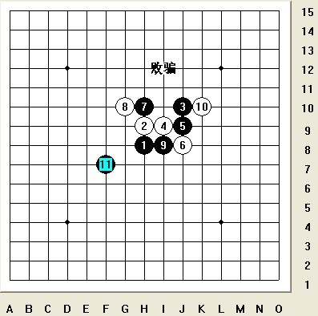
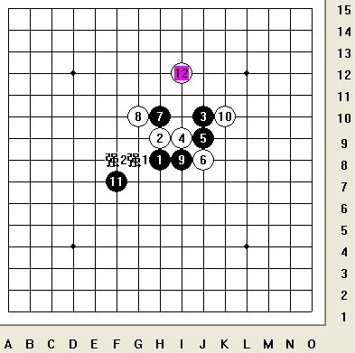
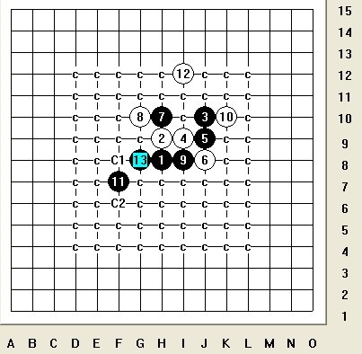
#26 Re:疏星的一个１２变化 作者：千羽鹤 发表时间：2009-5-24 12:17:08
你那个强2。。。。。
#27 Re:疏星的一个１２变化 作者：裁决殿雪月 发表时间：2009-5-24 15:33:41
第一图的12不容易胜 实战中如果大意……局面很容易扭转的